version 2.116 · October 2026
The management app is the digital notebook where you record your properties (buildings, houses, former cafés…), the flats and rooms, the tenants, the rents, the maintenance, the team and the accounts. It works on your phone and on your computer. Tenants and the team have their own app, linked to the management app.
Everything you write is locked in a safe: only someone who knows the key can open it. Not even the people who built the app can read your data.
In this manual the buttons are written in bold, exactly as you see them on screen with the app in English (you change the language in Settings, chapter 1).
App address
your-domain/locataires.html
Who is who
Landlord = the owner of the building, to whom you pay the rent of the head lease («head lease»).
Main tenant = you, your company
Subtenant = each tenant living in your flats or rooms.
To leave, tap the padlock at the top right (on a computer also Lock, bottom left). If you don’t touch anything for a while, the app closes by itself (you choose the time in Settings).
The app can be open on only one phone or computer. If you open it on a second device, «The app is open on another device» appears:
Take over → you get in, the other device closes at once.
Cancel → you don’t get in, the other one stays open.
Tip: tap the padlock before switching devices.
Warning!
Without the key and without the recovery key, nobody can reopen the safe. Keep them somewhere safe.
The app speaks 6 languages: Français, Italiano, Deutsch, Português, English, Español. To change it: Settings → at the very bottom, Language → tap the language.
The app restarts and asks for the key again: that is normal (for security). Rent receipts, deposit receipts and reminders to tenants stay in French (official documents). Names, addresses and notes you write yourself are not translated.
The version number is in Settings, at the very bottom of the page (e.g. «v2.58.0»). When there is something new, reload the app: on the computer Cmd + Shift + R (Mac) or Ctrl + Shift + R (Windows); on the phone close the app and open it again (twice if needed). The app always opens on the Home.
Important: the app is what sends the data to the tenants’ and team apps. If an old version is still running, they do not see the new features. At the very bottom of each tenant’s app there is «v…»: the version that sent them the data.
On the phone the menu is at the bottom, on the computer on the left.
| Item | What you find there |
|---|---|
| Home | The main page: alerts and the summary of the month. |
| Buildings | Your properties (buildings, houses, former cafés…) and their flats, rooms, garages, offices… |
| Buildings → 👥 Tenants | Tab of Buildings: the subtenants, today’s and those who have left. |
| Buildings → 💶 Tenant management | Tab of Buildings: everyone’s rent, month by month. |
| Maintenance | Cleaning, repairs, Complaints (tenants’ reports), waste collection, notices, 📣 Advertising and your team. |
| Tenant of the year | The bin-duty ranking, with the podium and the pizza 🍕. |
| Accounting | Journal of income and expenses, VAT (VAT), Statistics and Export for the accountant. |
| ⚙️ Settings | The settings, the tenants app, the «Give · lend · rent» listings. |
| + (round, bottom right) | Adds a building (if you are in Immeubles) or a tenant (if you are in Locataires). |
Everything opens and closes
Throughout the whole app, every card and every section opens and closes with one tap on its title. Closed, it shows a one-line summary; open, it glows with a warm light.
Long lists start closed, so the page stays tidy. The app remembers what you left open. When you search for something, the sections open by themselves.
At the top come first the things to do right away:
| Card | What it is for |
|---|---|
| 📩 New tenant message (red border) | A tenant has sent a report from their app (breakdown, cleaning, error in the file), often with photos. Tap it to read it (chapter 8). |
| 💬 New messages between residents | Someone wrote in the house chat. Tap to read (chapter 10). |
| 🧰 Listing to approve | A tenant wants to publish an item (give · lend · rent). Tap to approve it (chapter 11). |
| 💳 … says they have paid | A tenant tapped «I have paid» in their app (transfer, PayPal, card or crypto). Check the account, then tick the paid month. Tap to open their file. |
| 👷 News from the team | The team has sent something from its app: ▶️ started, ✅ finished, ⚠️ not finished (with the reason), notes, photos, sickness, new contact details. Tap to see who does what, where and when (chapter 9). |
| 🤒 Sick leave / 🏖️ Holiday | Someone in the team is absent today (or will be within 7 days), with the jobs to check. |
Then the summary of the month:
| Card | What it is for |
|---|---|
| Received this month | How much money came in this month, out of how much expected, with a percentage bar. |
| Late | How many tenants are late. |
| Vacant units | How many units are empty. |
| Rent collected / month | What you collect in a month with today’s contracts. |
| Landlords / month | What you pay the owners every month. |
| Result for the month | Rents − landlords − fixed costs = Expected net. Below: Actual net (collected − landlords − fixed costs − expenses of the month) and each partner’s share. The Fixed costs button opens the fixed costs. |
| Maintenance | «Tonight: put the bins out» (or «This morning») with the type of waste and the address, today’s and tomorrow’s jobs and the overdue ones. Open goes to Maintenance. |
| To watch | Late payments, move-outs, move-ins, contracts ending within 60 days, empty units, rents to review, payments outside the contract dates. Tap an alert to open it. |
| To collect | Who still has to pay this month. Tap Paid when they have paid. The 💬 bubble prepares a reminder. |
| To pay landlords | The rents to pay to the owners. Tap Paid when you have paid them. |
| Buildings | Each property with a bar of what was collected in the month. |
Here too, Result, Maintenance, To pay landlords and Buildings open and close with one tap on the title.
If you haven’t created the recovery key yet, an alert invites you to do it.
An Building is the property: a building, a house with rooms, a former café turned into rooms… A Unit is what is rented inside it: flat, room, garage, office, shop…
Each property is a tile with the address, the units, the month’s income and the buttons:
📍 (next to the title): the property’s Google map appears at the top, under the page title. Open in Google Maps opens the big map (with directions); ✕ closes it.
Units & balance: opens the property file (units, balance, expenses…).
The pencil ✏️ changes the property details.
| Tab | What is there and what to do |
|---|---|
| Units | The units / premises and who lives there: «Vacant» = empty, with move-outs and move-ins. Add a unit / space to add one. |
| 💬 Messages | The residents’ chat and the property’s own rules (chapter 10). |
| Landlord | Type of property, owner, rent, dates of the head lease and total paid. The month boxes: tap a month to mark it paid (green ✓); tap it again to cancel. |
| Expenses | The expenses: Description, Amount incl. VAT, VAT (the rate, or «no VAT»), Date, Supplier, Invoice no., Invoice (photo or PDF), Category and Concerns (the whole building or one unit). The 📎 opens the invoice; 📎+ adds it later. The bin deletes an expense. |
| Balance | What the property has earned, year by year and since the start, and the balance of each unit. |
At the bottom: End of management (see below), ⬇ prints the report, Edit changes the details (the bin is there too).
Expenses are deducted from the earnings
An expense put on a unit is deducted from the balance of that unit, from that of the property, from the Result on the home page and from Accounting.
An expense for «Whole building» only counts for the property.
In the property file → Units → Add a unit / space:
Name / number: e.g. «Appartement 2B», «Chambre 3», «Garage 12», «Bureau 1».
If you type only a number (e.g. «2»), the tenant sees «Chambre 2» (type + number) and finds their door. You can change the name any time: open the unit (tap its row in the Units list) → at the bottom Edit.
Type, in three groups: Housing (flat, studio, room, duplex, house), Business (office, shop, restaurant premises, practice, workshop / warehouse), Annexes (storage box, garage / box, parking space, cellar / storage, other).
Area, Floor (e.g. ground floor, 1st) and Located in (optional): where it is, e.g. «former bar», «1st-floor flat». Important: rooms of the same flat with the same «Located in» chat together (chapter 10).
Guide rent and Notes → Save.
| Tab | What is there |
|---|---|
| Current | Who lives there (or since when it has been empty) and Change to change tenant. Add a tenant if it is empty. |
| Occupants | Everyone who has lived there, with the dates. |
| Inventory | The 6 check-in photos (one per room) and, when the tenant leaves, their check-out photos next to them. |
| Door | The digital key (door code): status, end date, enable / disable. |
| Balance | Income, expenses, percentage of time occupied. |
One photo per room: Salle de bain, Cuisine, Chambre, Cave, Buanderie, Parking. They belong to the unit and stay from one tenant to the next. They are encrypted before sending.
The code stays hidden (••••••): tap 👁 to see it. Below is the history of changes. The tenant sees it in their app only if «Door code» is ticked in their space.
In Change the code there is Valid until (optional): after that date the code disappears automatically from the tenant’s app. Empty = no end.
In the Door tab you see the status: 🟢 Active (until…), ⏸️ Disabled or ⌛ Expiré le…. ⏸️ Disable the code: the code disappears immediately from the tenant’s app, without changing it. ▶️ Re- enable the code brings it back.
In the tenant’s app it appears in «My rents», between the rents and the contract: «🔑 My digital key · Chambre 2», the code in large print, 🟢 Active, «valid until … — ⏳ N days left», with a pulsing green border.
Remember
When a tenant leaves, change the code (Raison: Fin de séjour / départ) or disable it.
For a residential lease you may not lock a tenant out for not paying: only a judge can order that.
Sold, contract with the owner over? Don’t delete it: use End of management. That way its history stays in the statistics.
The property moves to No longer managed (in Immeubles). A mistake? Open it and tap Reactivate.
Bin = only for mistakes
The bin (in Edit) deletes for ever, with tenants, payments and expenses. Use it only for a property added by mistake.
Current = today’s tenants. Former = tenants who have left (they are never lost).
Type a name, a unit or a phone number in the search bar to find someone.
If you have several properties, tap an address to see only its tenants (All = everyone).
First of all: the property
A tenant is always in a property. If it doesn’t exist yet, create it (chapter 4).
Shortcut: property → Units → tap the unit → Add a tenant.
| Button | What it is for |
|---|---|
| Call / SMS / Email | Call or write to the tenant. |
| Remind | Prepares a reminder for unpaid rent (chapter 6). |
| Review the rent / Extend | Raises the rent from a date / extends the contract (chapter 6). |
| 🧾 Deposit receipt | Prints (or saves as PDF) the deposit receipt with amount, date, method and two signatures. |
| 📎 Attach the proof / ✓ Proof attached 👁 | Adds proof of the deposit (WhatsApp photo, transfer…) / opens it in preview. |
| Departure | The tenant moves out (see below). |
| Edit | Changes name, phone, rent, deposit, dates… |
| Bin 🗑 | Deletes for ever. Better to use Departure. |
In the Info tab you also see: File (✓ / ✗ Contract · ID · CNS · Deposit), House rules (✓ accepted on… / to accept again / not yet accepted) and Messages sent from their app (their reports, with the traffic light).
| Tab | What is there and what to do |
|---|---|
| Info | All the details, the deposit, the file, the house rules, their messages and the Total received. |
| Rents | The payments month by month (chapter 6). |
| Docs | The tenant’s documents (see below). |
| Space | Their app: access, code, what they see (chapter 8). |
| Notes | Whatever you want to remember → Save the notes. |
| Journal | Everything that happened with this tenant, with the date. It fills itself. |
In the Space tab, under What they see, the box 🛠️ Maintenance — what the tenant sees (7 days) shows the visits the tenant sees (cleaning and workers). Below, Not shown to this tenant says for each team member why they do not appear (schedule without a place, another building, a job in a neighbour’s unit, more than 7 days away…).
Tenants without a unit
The property sheet may show «N locataires sans logement attribué»: these tenants are not linked to a room / flat. Tap Assign next to the name and choose the Unit.
Without a unit: no room number in the app, no digital key or inventory, and the chat puts them all together.
👁 opens the preview inside the app, ⬇ downloads it, 🗑 deletes it. Maximum 10 MB, encrypted.
The tenant sees their documents
Every document you add is visible in their app (under «My file», with preview): that way they can check you received their documents and payments. To keep one private, tap 👁 Visible → it becomes Private.
Choose the year and, if you like, a single property. For each tenant you see the 12 month boxes and below:
Paid = everything they paid in the year.
Unpaid to date = what they should already have paid up to today and haven’t.
upcoming = the rents of future months. That is not a late payment.
Month outside the contract
If you mark as paid a month before move-in or after the end, the app asks you to correct the dates. If it finds payments outside the dates, the home page shows «paid outside the contract dates»: tap it and press Fix.
Tap an empty month → it becomes paid (full rent, today).
Tap a paid month → change Amount received (part payment), Date, Method, Note; print the Receipt; 📎 Proof adds proof of payment (photo of the transfer…), which the tenant sees in their app; 🗑 cancels.
| The box is… | It means |
|---|---|
| Green ✓ | Fully paid. |
| Orange with a number | Only partly paid. The rest is still due. |
| Red ! | Not paid, and late. |
| Grey · | Due later. |
| Light – | Not due (outside the contract). |
| Purple border | This is the current month. |
The Quittance
The receipt for one month, with your company as head tenant (landlord) and the subtenant. It can be printed or saved as PDF. In their app the tenant can also print a summary of all rents paid themselves.
Review the rent: Increase (%) or New rent, date From → Apply. The earlier months keep the old rent. Extend: + 1 year, + 2 years, + 3 years or a date → Save.
Maintenance menu. At the top choose All or one property. The tabs:
| Tab | What is there |
|---|---|
| Schedule | The next 14 days: cleaning, repairs and waste collections, with «put out the evening before» or «this morning». |
| Complaints | What tenants report from their app (breakdowns, defects, cleanliness, warnings…) and the work to do: To do + works, recurring and finished. |
| Waste | The waste collections of each property, the municipal calendar and the page / poster for tenants. |
| Notices | Notices to tenants (works, water cut…), visible in their app. |
| 📣 Advertising | Partner ads (pizzerias, shops, offices, music, social media…) shown in the apps, with statistics (see below). |
| Team | Your team: cleaner, workers, plumber, electrician… with Today (who does what, where and how far along) and 📋 Team activity (chapter 9). |
Job done? Tap Done in the list (or Repaired in the file), or the team marks it from its app with ✅. If there is a cost, it becomes an expense of the unit (or of the common areas) automatically and is deducted from the earnings. Change the cost → the expense is corrected; remove the cost or reopen the job → the expense disappears.
In a job’s file, 👷 Team follow-up shows everything the team has sent (status, time, note, 📷 photos).
Jobs finished before this new feature, with a cost never counted: To watch shows «interventions terminées avec un coût…». Tap it to add them (if you had already written them by hand in the expenses, don’t, or they will be counted twice).
Waste → Collection: choose the property, the type (residual, organic, paper, glass, Valorlux, bulky, other) and the collection: every week, every 2 weeks, or specific dates (with the link or file of the municipal calendar).
When to put out: the evening before or the same day, with the time (e.g. «after 6 pm»), and Where to put the bins (pavement, cellar, garage).
Municipal calendar: import the complete municipal calendar (.ics link or downloaded file): the app splits it by type of waste by itself and creates all the collections. With the link it updates itself. If the municipality uses an unknown name (e.g. «Christmas trees»), the tenant sees exactly that name.
Tenants (on the property card) → Create the link: a page with the collections for tenants, in 5 languages, with reminders on the phone. Copy the link, or Poster with QR to print and hang in the entrance.
Notices → New notice: For (one property or all), Message, Visible from and Until (optional) → Save. It appears at the top of the app of the tenants concerned.
In the apps the ad carries the label «📣 Ad» and a soft red border; tapping the title folds and unfolds it. «🗺️ Show on map» shows the shop; under the map «📣 Ad» brings the ad back.
Statistics (anonymous): under each ad 📊 views, clicks and percentage; in its sheet the details per day, app and language, and 📄 Report for the advertiser (A4) to print or send to the client.
Every tenant can have a personal app on their phone: rents, receipts, contract, documents, waste collections, house chat, listings and reporting breakdowns. It is locked: they only see their own data. It comes in 6 languages (FR, IT, DE, PT, EN, ES).
New code creates another code (the old one stops working). Disable the space closes everything. In Settings → Tenants app you see all tenants, with search and filters With access / Without access.
The cards (rents, receipts, contract, file, listings, reports) open with one tap; the open one glows with a warm light.
At the top: «Hello …» with the room and full address (it scrolls if long), then the map of the house (or the top ad). When there is something today or tomorrow (bins, cleaning, workers), the 🛠️ Maintenance frame blinks red: inside, each alert has its own dot (🔴 today, 🟡 tomorrow). 🛠️ Maintenance, one single card with: the visits of the next 7 days (cleaner and workers, with the time) — 🔴 today, 🟡 tomorrow, 🟢 the following days, ⚫ not coming —; the rating of each visit (cleaning and workers), one at a time once the hours are over, up to 7 days (😞 😐 🙂 ⭐; «Next ›» or «Skip» for the next one) with a comment (⏰ on time / late, 😊 friendly / 😠 rude, ✨ well cleaned / 🧹 missed spots, and free text); the 🗑️ Waste collections with the yearly ranking; 🛠️ Report a problem; the colour legend. 💶 My rents: the paid months, 💳 Pay now, the 🔑 digital key, 📄 my contract (to download) and 🧾 my receipts (printable summary with the company’s signature and stamp).
Then: the inventory (6 photos + check-out photos), their file, the house chat, give · lend · rent, the 🔔 notifications, the ads and the crypto bar. At the very bottom «v…».
The rating and comment reach you in the person’s sheet (Tenants’ comments) and in the team activity.
In the My rent card the tenant taps 💳 Pay now and chooses how to pay:
🏦 Bank transfer: beneficiary (your company), IBAN, BIC, bank, amount and reference, each with a Copy button, and the QR that the banking app reads (on a computer, or from another phone).
🅿️ PayPal: opens your PayPal.me link with the amount already filled in. 💳 Card: opens your payment link (Stripe, SumUp…).
₿ Crypto: the BTC / ETH / USDT / USDC addresses with QR and the network (e.g. Tron TRC-20).
Then they tap ✅ I have paid: you see it on the home page (💳). No money goes through the app: it goes straight to your account. Check and tick the paid month as usual. Only the methods you entered in Settings → Company & partners appear.
Protection of bank details
The tenant sees only the details of your company.
A wrong IBAN (one that fails the check) or another company’s details are never shown: the transfer option disappears until the details are right.
Warning
In Europe you may not charge the tenant a surcharge for card or transfer: the PayPal / card fees are yours.
Crypto: enter only the receiving address, never the private key or the 12/24 words (the app refuses them). Crypto sent on the wrong network is lost.
From the app the tenant sends a problem (🔧 repair, 🧹 cleaning, 📄 error in the file), with up to 3 photos. You see it:
on the home page, in the red card 📩 New tenant message — tap it to read text and photos;
in the tenant file, under Messages sent from their app;
in Maintenance → Complaints.
Repaired? Open the report and tap ✓ Repaired: the tenant sees «Done» (green) and the history stays. To delete it completely (duplicate, mistake) use the bin 🗑: it also disappears from the tenant’s app, with the photos.
Maintenance → Team → + Person: each person’s file.
| Field | What to write |
|---|---|
| Type | In-house worker (employee), External company (with RCS and VAT) or Private (occasional work). |
| Category | Day-to-day (cleaning, small jobs) or Skilled professional. |
| First name / Last name | First name and surname (or company name). |
| Trade, Rate | The trade and the price (e.g. €25/h). |
| Address, Phone, Email | Their contact details. |
| Usual hours | For each day: 🌅 Morning 1-2-3, ☀️ Afternoon 1-2-3 and 🌙 Evening, each with from / to and the place (see below). |
Each day (Lundi, Mardi…) is a box that opens with a tap. Inside: 3 rows 🌅 Morning, 3 rows ☀️ Afternoon and 1 row 🌙 Evening. Each row = one house: from / to and the place (the building).
Tap an empty clock: the app suggests 8:00 in the morning, 14:00 in the afternoon, 18:00 in the evening; the next house starts at the end time of the previous one; the suggested end is +1 hour.
+ 🌅 Morning / + ☀️ Afternoon add another house in the same slot; + Call-out / extra adds an extra row (e.g. an evening job). To remove a row: clear its times and save.
The place matters: the tenants of that building see the visit in their app (chapter 8).
For a job on a single day, use Complaints → Job with the date and the person instead.
Tap a person for their file, with 5 tabs:
| Tab | What is there |
|---|---|
| Profile | All the details and the current jobs. |
| Hours | The weekly hours and, for the last 3 months, the planned hours minus absences. |
| Absences | 🤒 Sickness, 🏖️ Leave or 📌 Other, From / To, a note and the certificate (photo or PDF) → 👁 Certificate opens it. |
| Activity | Everything they sent from their app. |
| 📱 App | Their access to the team app. |
You can choose the language of their app (FR, IT, PT, DE, EN, ES). Disable access closes the app (e.g. when they stop working with you).
Where do you download the team app?
Nothing to look for in the app stores: the worker taps the link you send (or scans the QR) and your- domain/equipe.html opens. Then: iPhone → Safari → Share → Add to Home Screen; Android → Chrome → ⋮ → Install app. The icon appears on the phone.
📅 Today’s planning: the houses with times and addresses, the jobs (what, where, your instructions and, for a breakdown, the tenant’s name and 📞). Right below 🕒 My schedule: for each house Arrival / Departure, the before / after photos (6 + 6) and ⚠️ Something is wrong (text + at least 3 photos). 🗓️ Month planning: one box per week (Week 1, 2, 3…) that opens and closes; the current week is open, with the orange border that «breathes».
For each job: ▶️ I’m starting, ✅ Done (with note and photos) or ⚠️ Not finished (they must write why).
I’m sick / absent: dates and photo of the certificate → shows up in their Absences and on the home page.
My details: updates phone, e-mail, address.
Without a connection, what they send waits and goes out by itself as soon as it is back.
They see no rents, no accounts, no other tenants and none of your notes.
Home page: «👷 News from the team» and the day’s absences. 📋 Team activity (home page or Équipe): Today — who, what, where, status and time — and the log with notes and 📷 photos. In each job’s file: 👷 Team follow-up. With ✅ the job is marked «done» by itself (and the cost goes into the expenses).
When you choose Who? in a job, anyone absent on that date shows «(absent)».
In the person’s sheet: Tenant ratings (the average rating of the cleaning) and Tenants’ comments (date, tenant, rating, ⏰ 😊 ✨ and the text).
A mini-chat in the tenants app: they organise themselves (duties, shared shopping…) without giving out their phone number. Everyone sees only the short name and the message (e.g. «Karim B.»).
On by itself, but only between people living in the same flat (same unit, or same «Located in»). Someone living alone has no chat.
To change it: property → 💬 Messages → Who chats together?: Same flat (default), Same unit only, or The whole property (all residents: you decide). Untick «House messages» to switch it off.
You read everything: in the same tab, and on the home page «💬 N new messages». You can reply (Send, shown as 🛡️ Manager) and delete a message with 🗑 (it disappears for everyone).
Anyone who leaves loses access at once; messages delete themselves after 90 days.
In the same 💬 Messages tab there is 🗑️ Bin rota (on by default). For each collection evening the app picks a resident of the chat in turn: once Karim, then Ana, then Luca… If there are several collections on the same evening (glass + paper), it is a single duty. Whoever moves in takes the place of whoever moved out.
In the app of the person on duty: «🗑️ Tonight — It’s your turn: Glass» with ✅ Done and 🔁 I can’t. The others see «Karim B.’s turn» and, in the collections, 👤 the name under each evening. «I can’t» → the others receive «Karim B. can’t. Can you do it?» with 🙋 I’ll do it: whoever taps it takes the duty.
Everything also appears in the chat, in the reader’s language. In the app, under each chat, you see the next duties with ✅ (done, and by whom) or ❌ not done. Forgotten? If nobody tapped «Done» before the truck passed, the chat shows by itself «⚠️ Duty forgotten: Karim B.» and Karim also does the next duty («catch-up»). Everyone else’s turn stays the same.
Done in their place: whoever puts the bins out for someone else taps 🙋 I did it for them: the duty counts for them, and the other returns the favour on their next turn.
Ranking of the year (reset in January): 🏆🥈🥉 for those with the most duties; someone who forgot only sees «🔁 1 to catch up», without shaming. In the app you see it under each chat’s duties.
Someone living alone has no duties. To switch off: untick «Bin duty».
In the left menu is the ranking of all buildings: 1 bin duty done = 1 point; on a tie, whoever forgot less comes first. At the top the podium 🥇🥈🥉 with name, unit and points; below the full ranking. Choose the year (current or previous); everything restarts from zero every 1 January.
A prize? Take the top 3 out for pizza and tap 🍕 Pizza given: «Treated on …» stays written (tap again to cancel).
Each tenant sees 10 rules in their language (quiet, cleanliness, drains, waste, smoking, guests, safety, energy, breakdowns, respect). In the 💬 Messages tab you can add the This building’s own rules (e.g. «Washing machine until 9 pm») → Save the rules. If you change them, the property’s tenants must accept them again. In each file you see who accepted and when.
Tenants can give away, lend or rent out their items (tools, appliances, furniture…). Listings appear on the website, on the public page your-domain/outils.html («Donation / Location tools» tile).
Illegal or unsuitable item? Remove removes it at once from the website and the app. You can also publish your own items with Post an item: they go online immediately. Listings expire after 90 days.
Accounting menu. At the top choose the year and the period (year, quarter or month). The tabs:
| Tab | What is there |
|---|---|
| Journal | All income (rents collected) and outgoings (expenses, landlords, fixed costs) for the period, with net / VAT / gross, the Result and the 📎 to open invoices. It warns you if an expense has no invoice. |
| VAT | For each return period: VAT collected (taxable rents), VAT deductible (invoices) and the balance to pay / to recover. Below, choose for each property whether the rents are exempt (housing, normally in Luxembourg) or with VAT (shops, offices, garages). |
| Statistics | The figures for the year and since the start (see below). |
| Export | Download the journal (Excel / CSV file for the accountant) or Print / PDF. |
Country, frequency (monthly, quarterly, yearly) and VAT rates are set in Settings → Company & partners. It is a help: you still need the accountant.
The Journal shows one month at a time, starting with the current month. At the bottom, ⬇ Show the previous month adds the month before, then the one before that… (month by month).
In the Search bar type a few letters or numbers: a name, a supplier, a property, an amount or a date. Only the matching lines remain.
From / To: shows only the lines between two dates.
✕ Clear removes the search and the dates.
Choose the year at the top.
You see Rents received, Unpaid to date, Paid to landlords, Repairs & costs, Fixed costs, Buildings’ profit and Net result.
Below: each partner’s share, the figures since the start and one line per property (including those No longer managed).
Print → Summary (one page) or Full (with the detail of each property).
You can also print: the report of a property or a unit (⬇), the Receipt for a month, the Deposit receipt, the collections poster with QR and the Paiements page (from Réglages).
| Item | What it is for |
|---|---|
| Sync | Shows whether everything is saved. Tap to send and receive the data right away. |
| Accounting | Journal, VAT, statistics and export (chapter 12). |
| Tenants app | All tenants and their app access (search, filters, give or remove access). |
| Give · lend · rent | The tenants’ listings: approve, remove, publish your own. |
| Company & partners | Logo (appears in the app, in the tenants and team apps, on receipts and printouts), name, address, town, phone, email, Country, Website, Company reg. no., VAT no., IBAN, BIC / SWIFT, Bank; the payments for «Pay now» (PayPal.me, card link, BTC / ETH / USDT / USDC addresses with the network); Accounting and VAT (VAT-registered, frequency, rates); and the partners with their share (total 100 %). |
| Upload signature + stamp | In Company & partners: the company’s signature and stamp (PNG or JPG, scanned at 300–600 dpi). The background becomes transparent automatically; choose the Width on the sheet (6–12 cm) looking at the A4 preview and the quality indicator. It appears on the rent summary the tenant prints. |
| Monthly fixed costs | Monthly costs (salaries, office…) with Since and Until. |
| Install on this phone | Puts the app icon on the phone (chapter 15). |
| Auto-lock | After how many minutes the app closes by itself. |
| Recovery key | The code for when you forget the key: Copy, Print or Email. Do it right away! |
| Change the access key | Changes the key. Other devices will have to use the new one. |
| Encrypted backup | A locked backup copy. |
| Readable export (JSON) / Import | A readable copy (not protected!) / restore the data from a copy. |
| Forget this device | Removes the app from this device (the data stays on the server). |
| Delete all data | ⚠ Deletes everything for ever, on all devices. |
| Appearance | Automatic, Light or Dark. |
| Language | The app language: Français, Italiano, Deutsch, Português, English, Español (chapter 1). |
| 🔔 Turn on notifications on this phone | Notifications and a number on the icon when there is something new (reports, chat, team, payments). |
| v… (at the bottom of the page) | The app version (chapter 1). |
Strict check of the company details
These apps belong to your company: name, address, RCS and VAT entered in Settings.
The app refuses wrong details: the name or number of another company, an IBAN that fails the check, a VAT number entered instead of the IBAN, a badly written RCS, VAT number or BIC. The red message says what to correct.
If it finds old wrong details, the app corrects them by itself when opening (and also sends them to the tenants apps).
| Colour | It means |
|---|---|
| Green — Synced | Everything saved. You don’t need to do anything. |
| Blinking blue | Saving… |
| Orange — Offline | No internet: the data stays on the phone and goes out as soon as the network is back. |
| Red | A problem: tap the dot to try again. |
iPhone: open the address in Safari → Share button (the square with the arrow; on newer iPhones first the three dots ⋯ at the bottom) → Add to Home Screen.
Android: open the address in Chrome → ⋮ menu → Install app (or Settings → Install).
The app icon appears on the phone. It also works without internet: the data goes out as soon as the network is back.
This part of the management app is for the intervention business: the agencies, their buildings, the quotes and the job invoices. Rent management does not change.
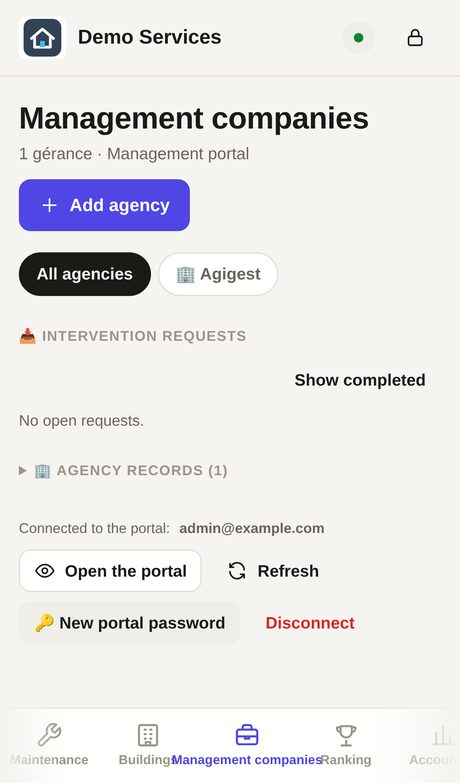
A new request makes the dot blink and appears on the Home page. Tap it → 📌 Assign a worker (⭐ = recommended trade): date, time, photos of the problem. The worker gets it in their app; the agency follows every step in the portal.
When the worker has finished, the request becomes 🟢 to close: look at the after photos, then close it. It stays in 🟡 to invoice.
Before the first invoice, fill in Settings → 🧾 Invoicing : company name, address, RCS, VAT, IBAN, business permit no.
Maintenance → 📝 Quote → New quote . Choose the type: Works or Maintenance contract (monthly flat rate).
Save as often as you like, without a signature: the quote stays 🟡 Being prepared. Once the prices are in, the director taps ✅ Quote finished : only then do sending to the client (PDF, WhatsApp, email, link, portal) and ✍️ Have the client sign (Bon pour accord) appear. Not sent yet? ↩️ Back to preparation .
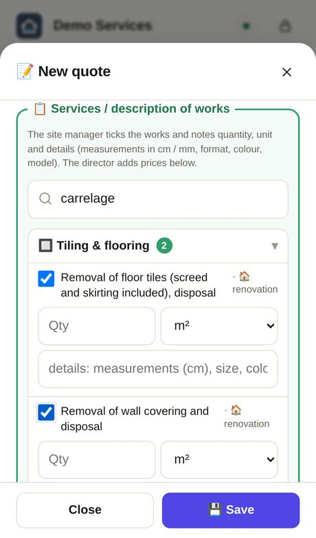
Quote photos: choose them in one or several goes (they add up); under the field each name appears with ✕ to remove it, then Save and the thumbnails appear. 20 at most.
Sending the quote: to an agency with 📤 Send to the agency portal (it accepts, declines or asks for a revision in its portal); to a private client or a company with 🔗 Link / QR code : WhatsApp, SMS, email or a QR to scan. The client reads, signs with a finger, and you see it straight away.
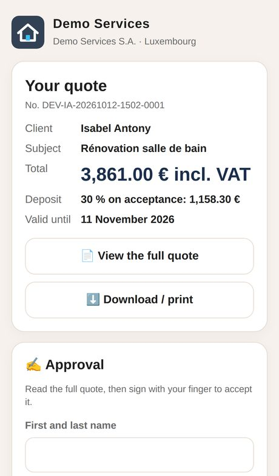
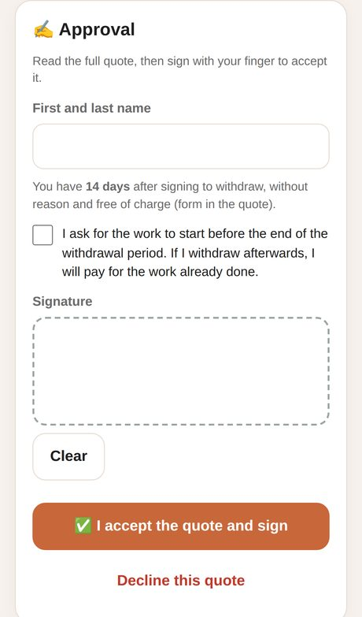
The quote’s dot: 🟢 waiting · 🟡 expires soon · 🔴 expired · 🟣 signed by a private client, 14-day withdrawal · ✅ accepted, free to start. A revision creates version R1, R2… with the same link.
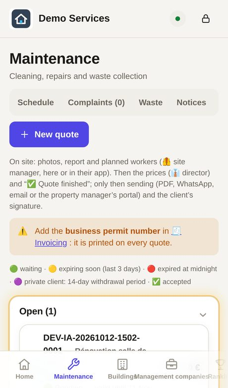
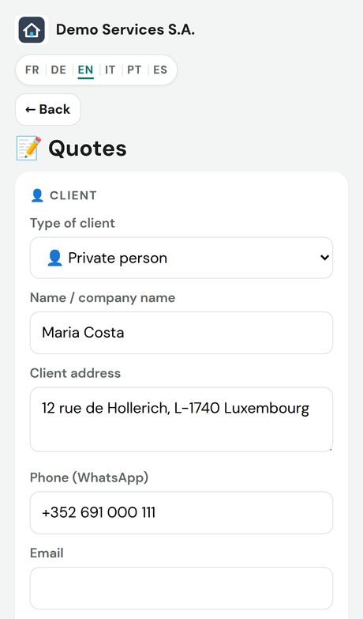
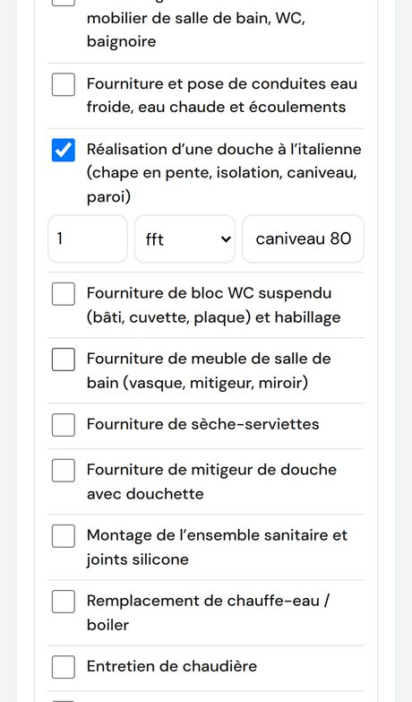
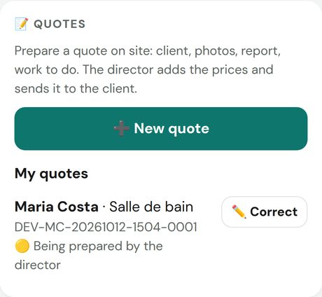
Accounting → 💳 Subscriptions : the agencies’ plans, payments, and offers shown or hidden in the portal. Statistics: quotes accepted/declined, response times, amount invoiced.
Maintenance → Team tab: next to New worker you find 📌 Assignment (intervention requests) (pick the worker, then the request to give them) and 📅 New job (new intervention) (the form opens, “Who?” to choose). The same buttons are in each worker’s sheet.
The poster scrolls the photos with your finger or the ‹ › arrows; tapping a photo opens it full screen (phone width, limited height).
Settings → 🔒 Hide: tick Agencies, Buildings, Hotel or Real estate agencies. In the menu the name becomes “🔒 HIDDEN” and the page no longer opens. Untick to get it back (no password).
Buttons 💬 WhatsApp · ✉️ Email · 📱 SMS: the code goes to the guest in their language. The code history stays in the card.
A tap opens the properties full screen: photos to swipe, price, rooms and the agency contact (📞 Call · ✉️ Email). A deleted property disappears everywhere.
Same colours everywhere: 🟠 jobs · 🔵 managers · 🌊 new property · 🟣 quotes · 🟢 tenants and rents · 🟡 hotel · 🔴 urgent · advertising. On a computer, hover over the dots under Settings ; in the apps, tap the small coloured lines at the bottom (ℹ️ for the whole key).
At the bottom, 📊 Charts: key figures, jobs by type, per month, per person, punctuality and client ratings; 🖨️ Management report (PDF) prints them.
When finishing a job, the worker can note the quantity (e.g. 12 windows, 3 taps, 40 m²). It shows in the job history and in the statistics.
Invoices, quotes, reports and statistics: your brand by your company Rent receipts and deposit receipts stay in the landlord’s name, with its stamp. 💳 Subscriptions is its own menu item.

The portal is where each agency requests jobs, follows the work, answers quotes and downloads invoices. Address: your-domain/portail.html — 6 languages, on phone and computer. To try it without an account: Voir la démo on the website.
Open the personal link you received (WhatsApp or email) and choose your password once. Then: email + password, on any device. Forgot it? Tap 🔑 Forgot your password? → you receive a new link.
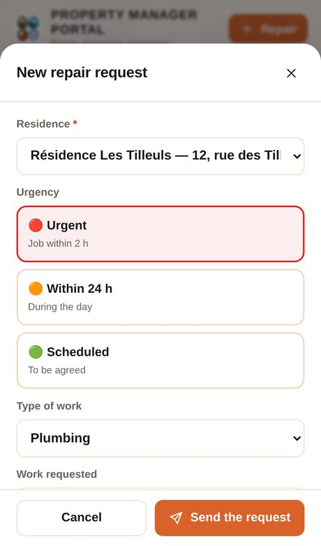
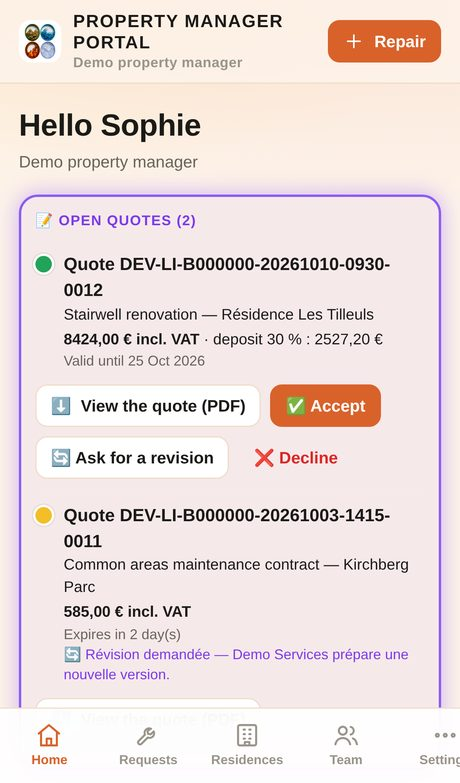
Each request moves on: Received → Taken on → Planned → In progress → Finished, with the technician’s name, the time, before/after photos and the report. Write a message at the bottom of the sheet.
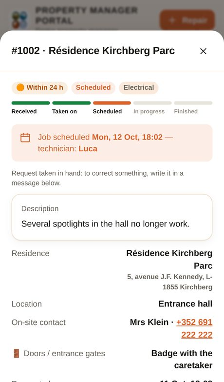
On the Home page, the purple box Quotes in progress: View the quote (PDF) , then the manager taps ✅ Accept , 🔄 Ask for a revision (writing what to change) or ❌ Decline . The dot shows the time left before it expires.
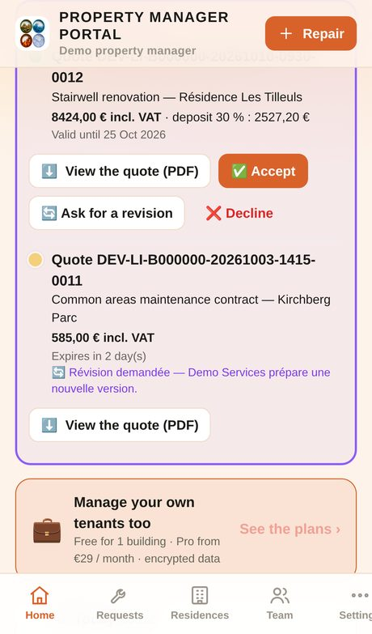
Accounting : the month’s invoices, paid and unpaid, PDFs to download, Excel/CSV export. Statistics : “Your activity”, response times, satisfaction, quotes accepted.
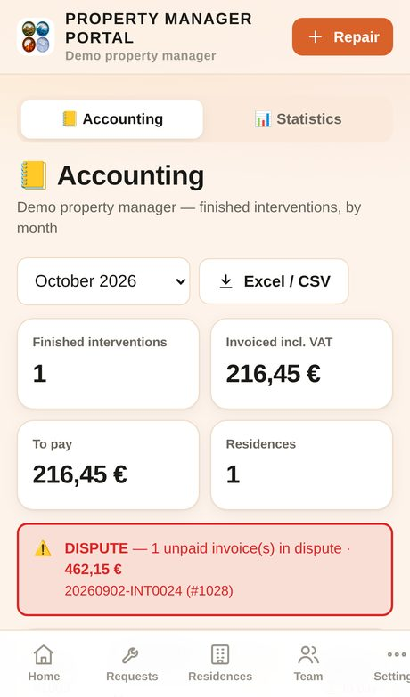
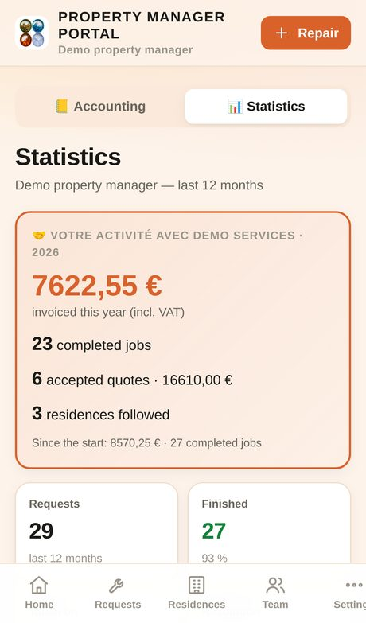
Settings → My company : address, RCS, VAT, bank and the agency logo. Team : the manager adds colleagues, each with their own access. Notifications: Enable on the Home page (iPhone: first install the app on the home screen).
A serious emergency? Call +352 691 423 943 — 7 days a week.
What changed since version 2.116: the management app, the tenants’ app and the team app.
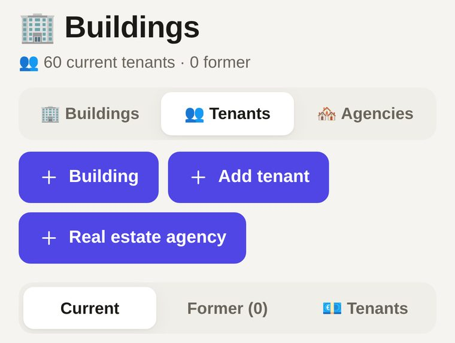
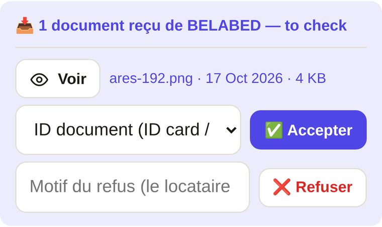
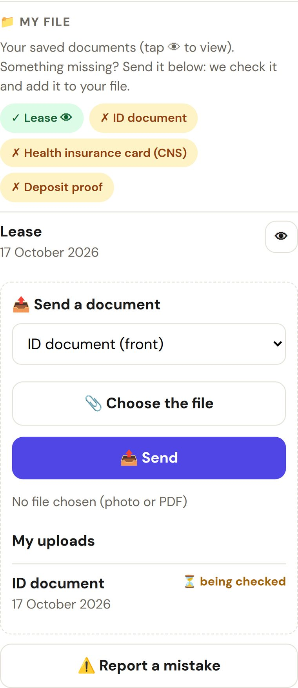
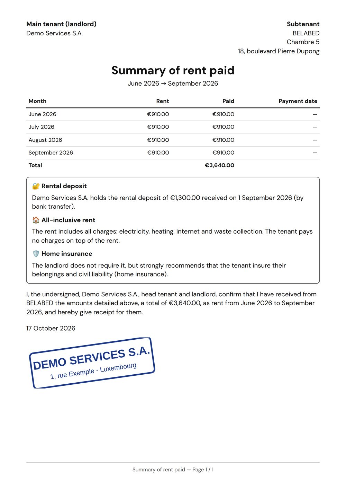
🔐 Security: Excel / CSV exports can no longer contain hidden formulas; a malformed message no longer blocks reception; tenant uploads are limited per day.